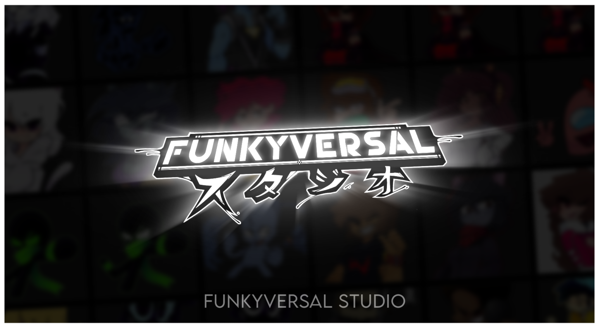
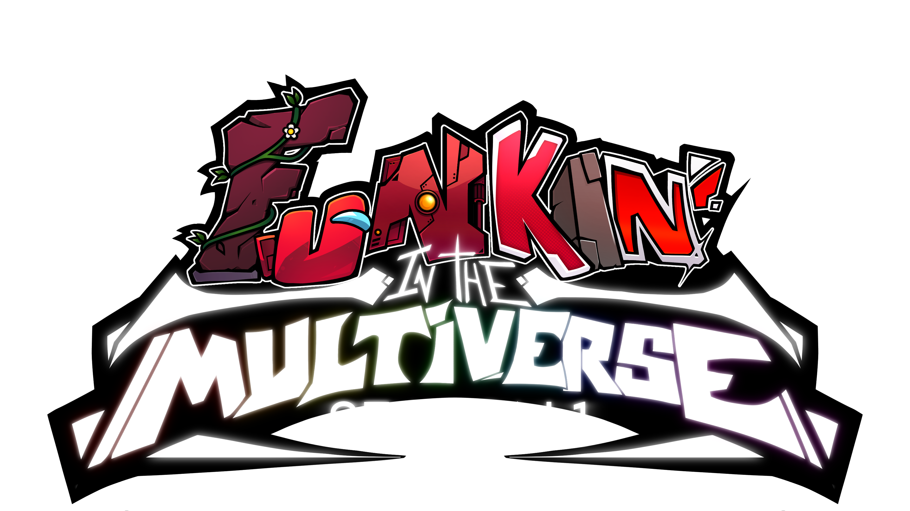

WHAT IS FUNKIN' IN THE MULTIVERSE?FNF: Funkin' in the Multiverse is a mod for the game Friday Night Funkin' (developed by FunkinCrew.inc) created and directed by L-C 380. It is a mod that tells the story of how our protagonist BF.XML, saved the multiverse using the powers of a mysterious girl from the past. In this ambitious but exciting adventure, BF must sing, fight, escape and use his new powers to survive in his new adventure across the multiverse. |
 |
WHO CREATED IT, AND WHAT IS FUNKYVERSAL STUDIO?This mod was created on January 6th, 2023 by the artist, L-C 380 (Director, Writer, General Artist). After gathering a large group of people to develop this mod, FUNKYVERSAL STUDIO was created, a studio created solely to define the public image of the mod team. |
|
WHAT WILL THIS MOD BRING US IN THE FUTURE?Funkin' in the Multiverse promises a lot of content, enough to cover the story 100% and at the same time make the player have a good time playing it. In this first version (V1), the mod promises a total of 30+ songs inside of a pack of 3 complete episodes, and 2 Freeplay extras, each song with 2 types of difficultes. More episodes will be developed in the future, trying to provide THE BEST EXPERIENCE possible, with the upcoming 4th episode being based on the indie game, Hollow Knight. |

FIND OUT MORE ABOUT US!